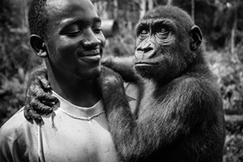
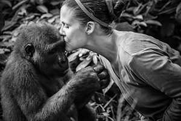
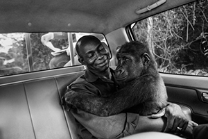

Image: Jo-Anne McArthur / We Animals
Thierry with a young gorilla at Ape Action Africa
Thierry with a young gorilla at Ape Action Africa.

Image: Jo-Anne McArthur / We Animals
Rachel Kissing a Young Gorilla at Ape Action Africa in Cameroon
Rachel Hogan is the Director of Ape Action Africa in Cameroon. She and her team have rescued thousands of primates from the bush meat trade and the pet industry since she began there in 2001 (Ape Action Africa was formerly named the Cameroon Wildlife Aid Fund).

Image: Jo-Anne McArthur / We Animals
Appolinaire and Pikin moving from the vet clinic to the new sanctuary space
Appolinaire and Pikin moving from the vet clinic to the new sanctuary space. Appolinaire is one of the gorilla caretakers at Ape Action Africa.